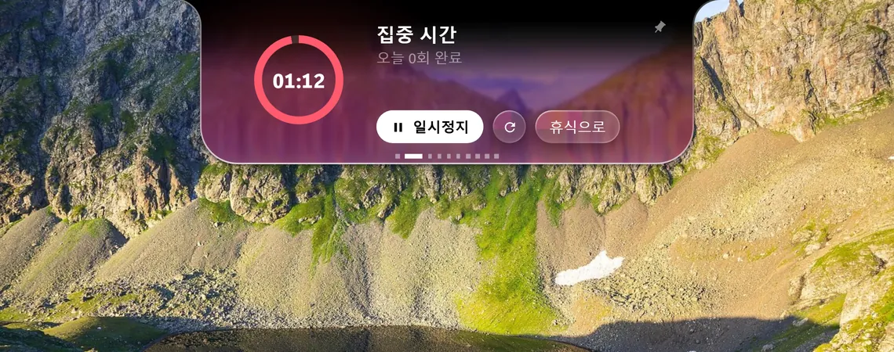
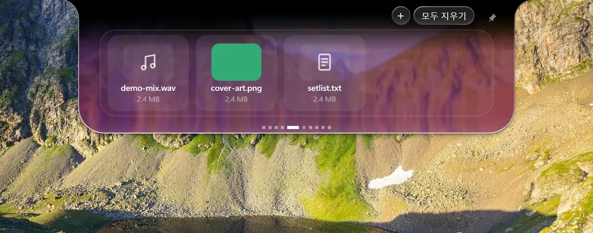
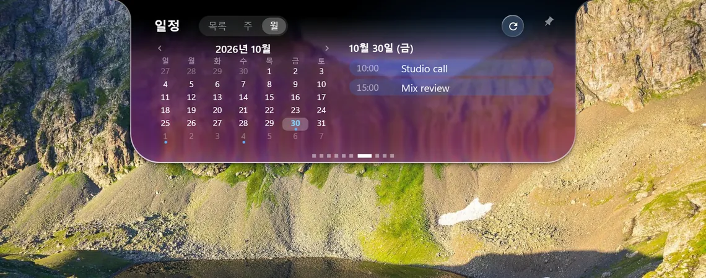
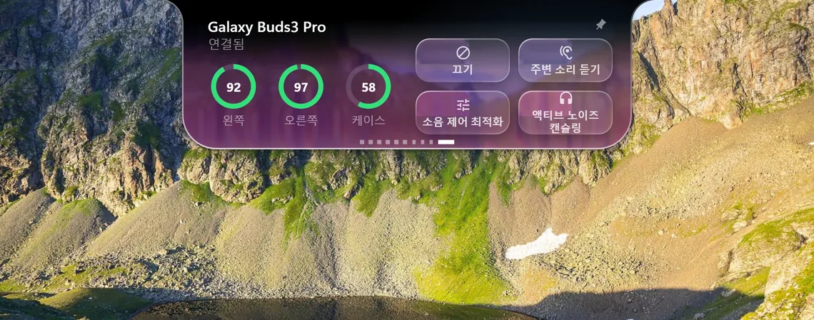
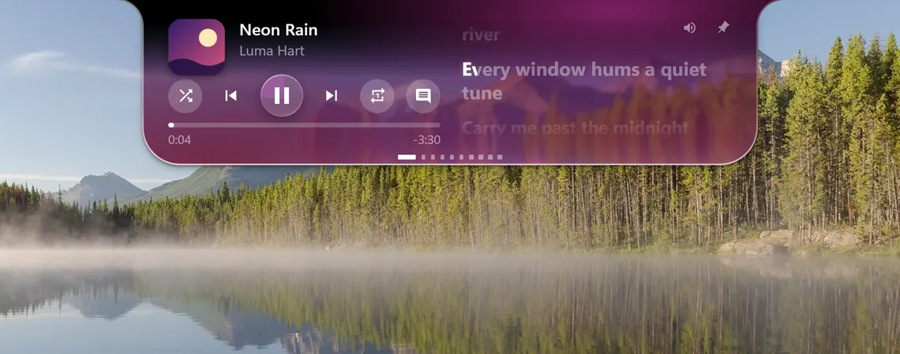
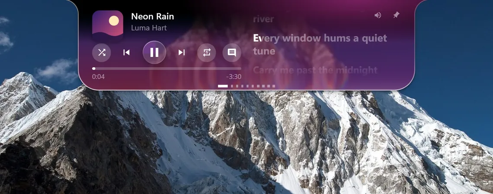
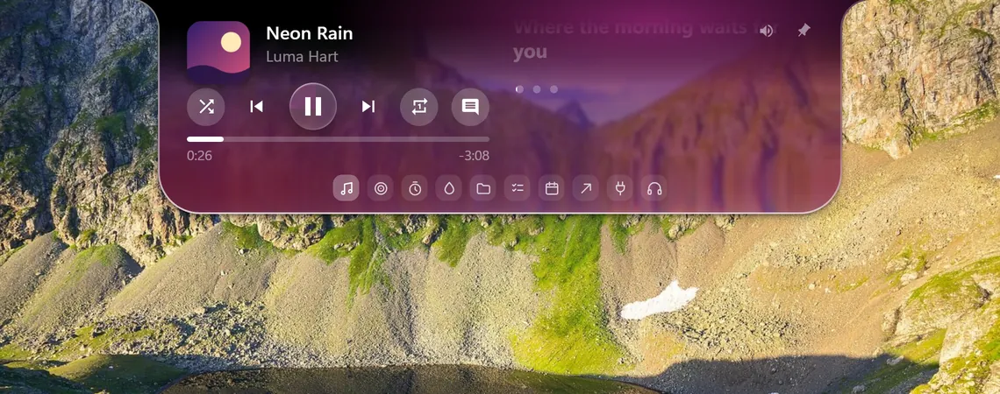
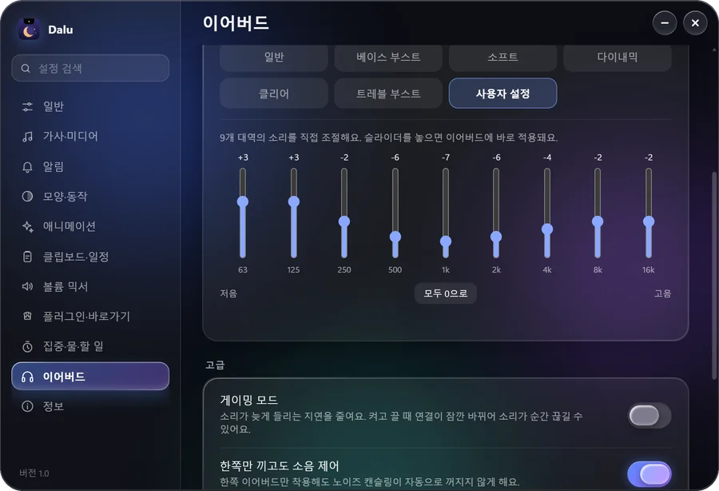
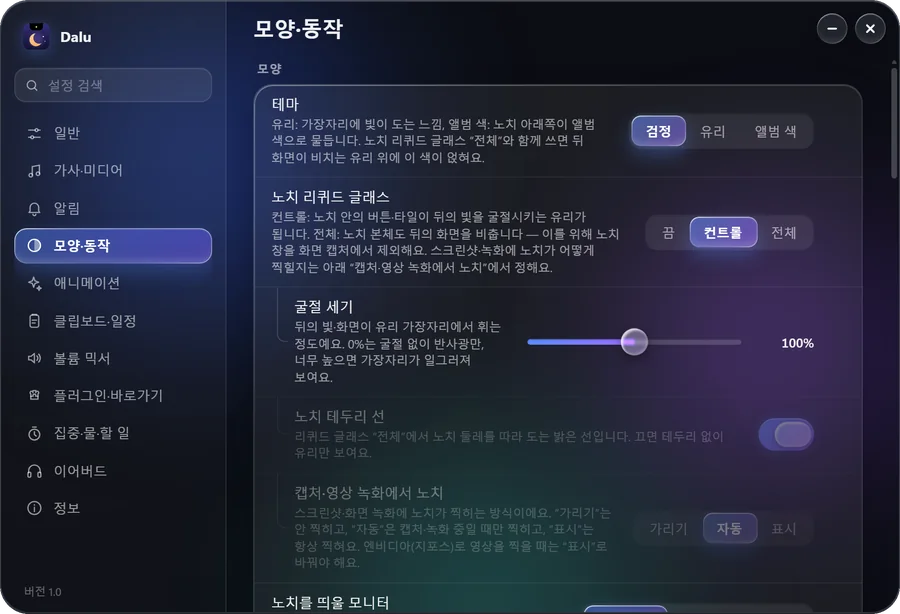

노치 하나에 다섯 페이지
- 음악
가사가 단어 단위로 흘러요
곡에 타이밍 정보가 있으면 단어마다 맞춰서 보여 줘요.

집중포모도로가 조용히 돌아가요
포모도로, 타이머, 물 마시기, 할 일을 한곳에서.

선반파일을 놓아 두고 들고 다녀요
노치에 놓은 파일을 다른 창으로 끌어다 쓸 수 있어요.

일정달력을 한 달 단위로
캘린더 주소(.ics)를 붙여 넣으면 목록, 주, 월로 볼 수 있어요.

이어버드소음 제어를 바로 바꿔요
삼성 갤럭시 버즈의 모드를 노치에서 전환해요.
뒤 화면을 휘어 보이는 유리
배경화면을 골라 보세요. 노치가 뒤 화면을 비춰요.


점에 올리면 아이콘으로
작은 점에 마우스를 올리면 탭 아이콘이 나타나요.


9밴드 이퀄라이저
이어버드 이퀄라이저, 게이밍 모드, 한쪽만 끼고 소음 제어. Buds3 Pro에서만 확인했어요.
내 손으로 바꾸는 노치
설정 100개 넘게, 4개 언어, 플러그인은 JSON 파일 하나로.

- 설치
- 관리자 권한 없이 설치해요.
- 확인
- 다운로드 페이지에 SHA-256 값이 있어요.
- 라이선스
- 소스 공개, 비상업적 이용 가능(PolyForm Noncommercial 1.0.0).
코드 서명이 없어서 처음에는 Windows SmartScreen이 경고할 수 있어요.